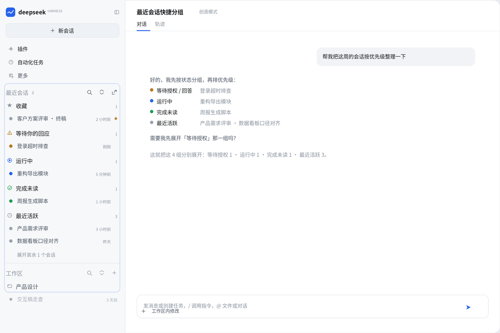
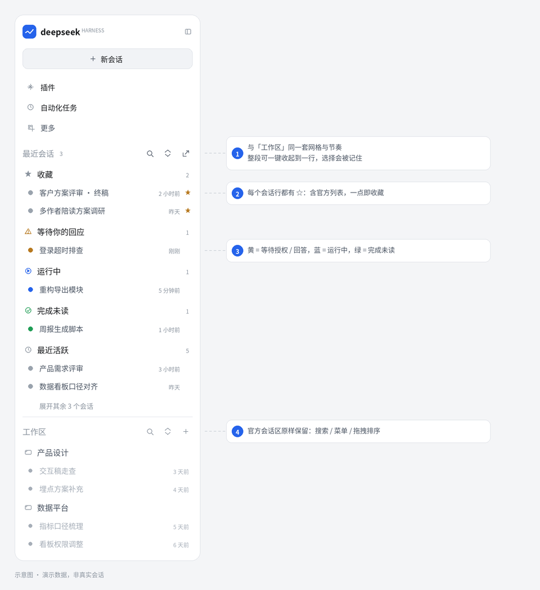
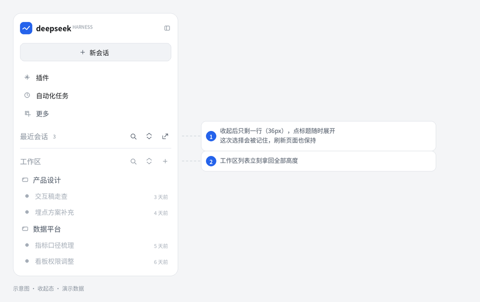

最近会话
像官方「工作区」一样长在左侧栏里的「最近会话」—— 收藏、运行中、等待你的回应、完成未读、最近活跃，一屏直达； 不用时一键收起到一行，标题右侧 🔍 还能就地搜索，每个会话行都有 ☆ 一点即收藏。



- 融入侧栏与官方「工作区」同一套网格（36 / 34 / 32 / 28px），不另开页面、不改官方会话区
- 五个维度收藏 · 运行中 · 等待你的回应 · 完成未读 · 最近活跃
- 状态一眼黄点待授权/待回答、蓝点运行中、绿点完成未读
- 一点收藏每个会话行（含官方列表）悬停都有 ☆，一键收藏；也可拖进「收藏」分组
- 不占地方整段可一键收起到一行，把高度还给工作区列表
- 就地搜索标题右侧 🔍 直接筛选本分区的会话，按标题 / 工作区匹配
在 DSH 里安装：
Plugins → Discover → Add index source https://tianxiaz.github.io/dsh-recent-sessions/market/index.json
dsh plugin --profile <profile> add "git+https://github.com/tianxiaz/dsh-recent-sessions.git"